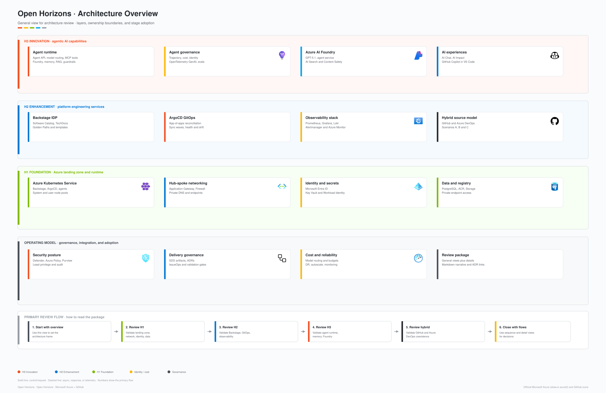
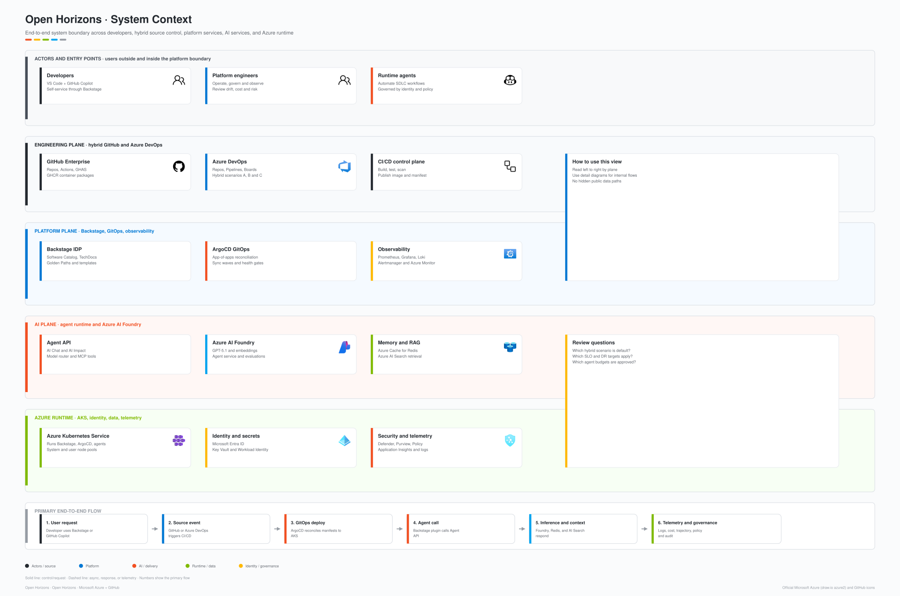
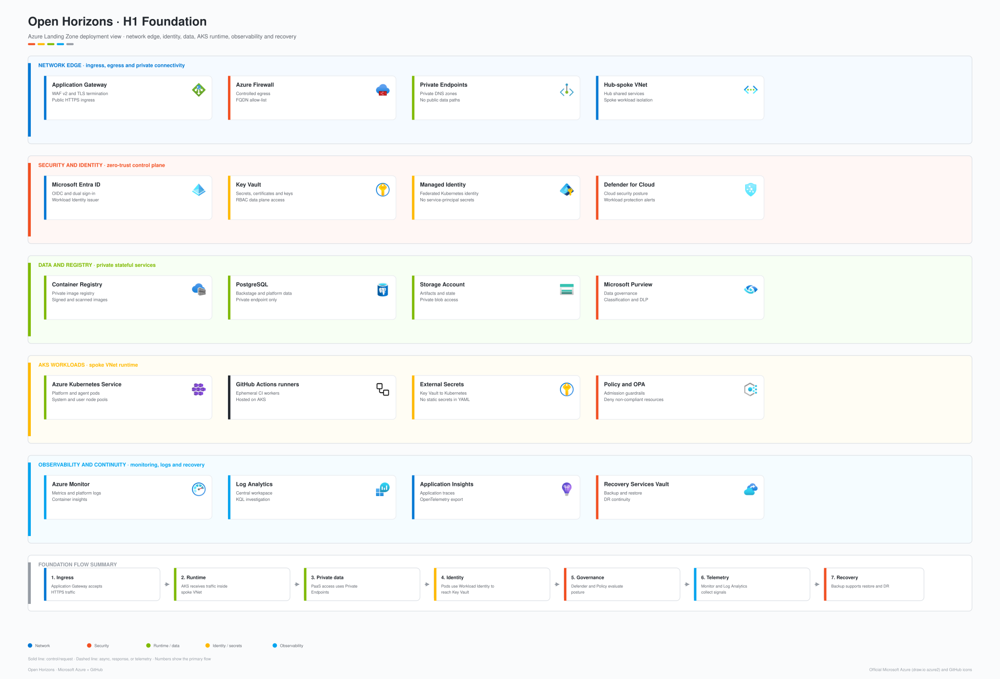
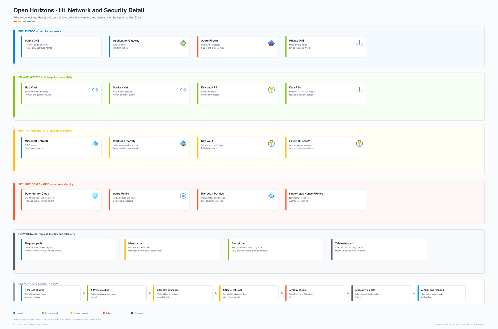
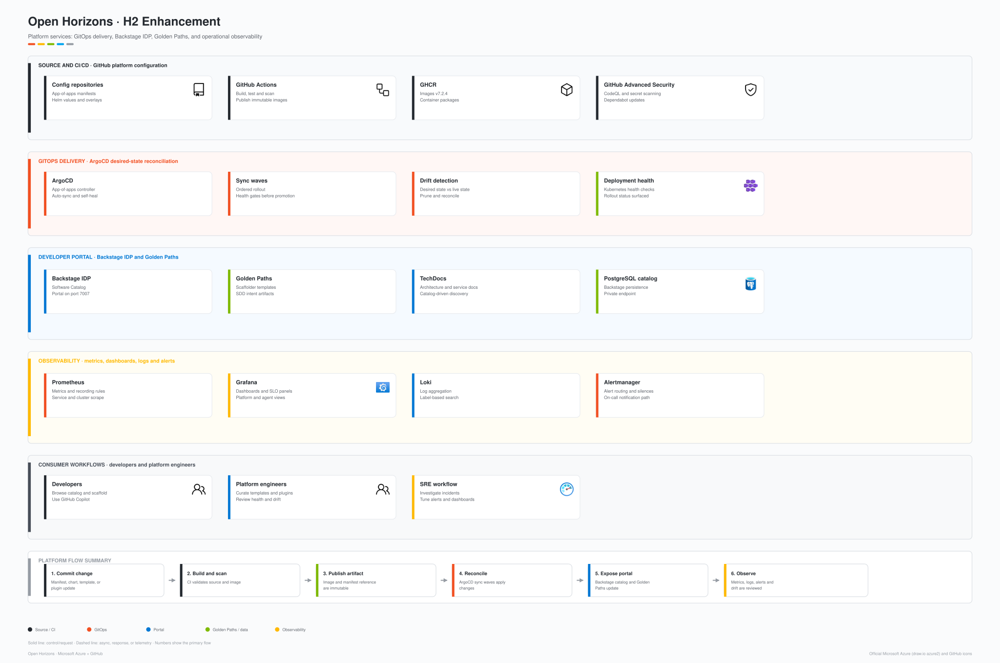
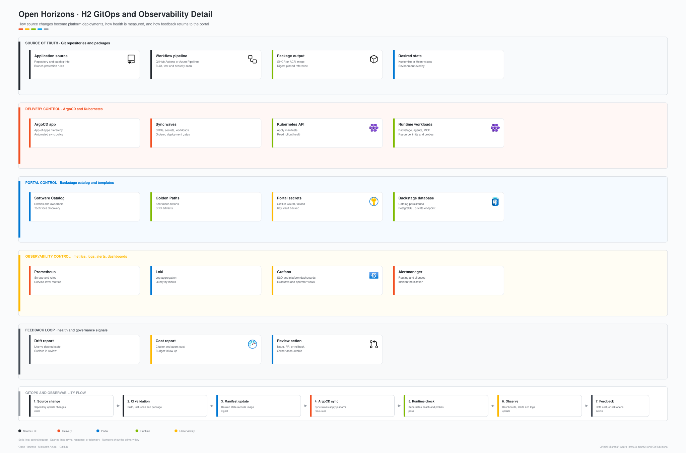
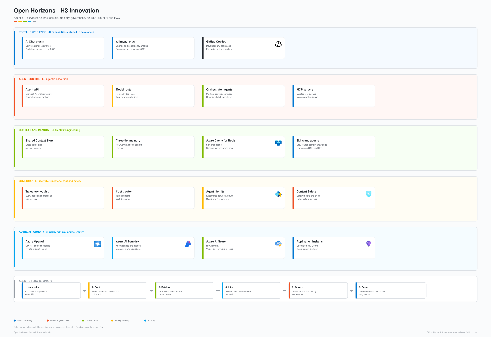
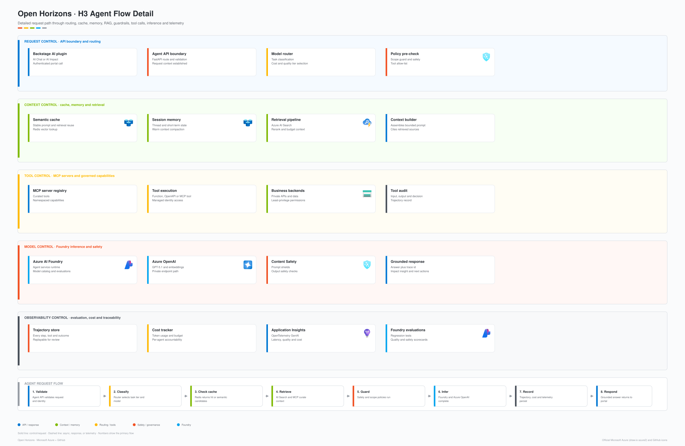
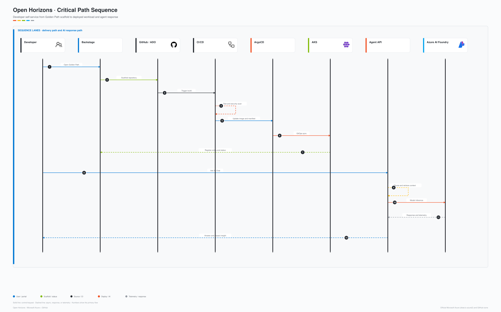
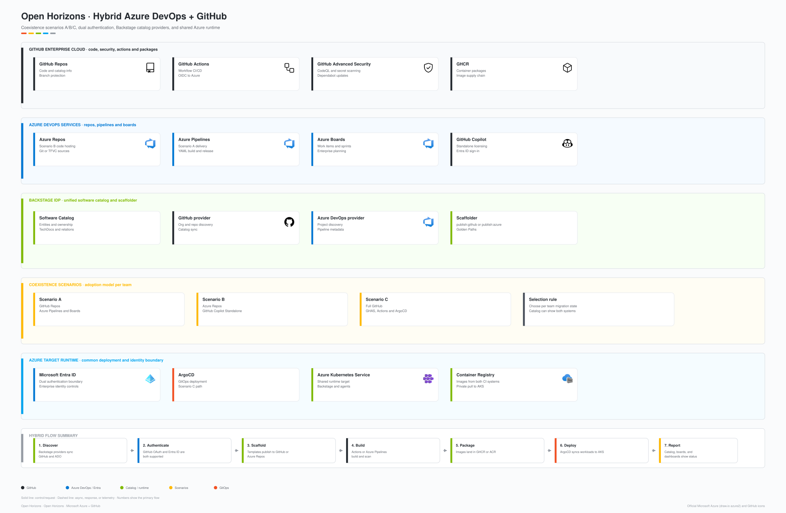

Arquitetura e execução dos agentes.
Como o acelerador matérializa Backstage OSS, Azure, GitHub, Azure AI Foundry, MCP, guardrails e observabilidade em uma plataforma operável.
Quatro atos. Um objetivo: sair sabendo como a plataforma funciona por dentro.
Modelo de referência
Horizons, camadas, fronteiras do sistema e diagramas oficiais de arquitetura.
Implementação da plataforma
Terraform, AKS, Backstage, ArgoCD, observabilidade, políticas e repo map.
Runtime agêntico
Agent API, roteamento, loop de tool calls, hooks, trajetórias, custos, MCP e Foundry.
Operação e revisão
Fluxo ponta a ponta, rollout H1/H2/H3, segurança, observabilidade e checklist de arquitetura.
Open Horizons é uma arquitetura para tornar agentes executáveis, governados e auditáveis.
Fundação segura
AKS, rede privada, identidade, Key Vault, políticas e observabilidade desde H1.
IDP operável
Backstage OSS como produto interno: catálogo, Golden Paths, TechDocs e status.
Contexto controlado
MCP, memória, cache, skills e RAG com budget de contexto e fronteiras claras.
Intencao explicita
SDD, CONSTITUTION.md, model routing e scope guard antes da implementação.
Execução rastreavel
Trajetoria, custos, hooks, telemetria GenAI e evidencia para revisão.
Modelo de referência.
Horizons, camadas, atores e fronteiras do sistema antes de discutir qualquer implementação.
Tres horizontes de adoção. Seis responsabilidades operacionais.
A arquitetura separa fundação, plataforma, inovação agêntica e modelo operacional.

A fronteira do sistema inclui pessoas, agentes, sistemas de engenhária e runtime Azure.

Implementação da plataforma.
Como H1 e H2 saem do desenho para Terraform, Kubernetes, GitOps, Backstage e observabilidade.
A fundação H1 entrega o runtime Azure seguro para o resto da plataforma.

Terraform e o contrato de infraestrutura reproduzivel.
AKS + ACR
`aks-cluster` e `container-registry` criam o plano de execução, identidade e imagens aprovadas.
Networking
VNet, subnets, NSGs, private endpoints e caminho de egress controlado.
Key Vault + identity
Managed Identity e Workload Identity substituem segredo estático em pod.
PostgreSQL + Storage
Estado do Backstage, artefatos, catálogo e integrações persistentes.
aks-cluster · networking · container-registry · databases · security
ai-foundry · observability · argocd · backstage · cost-management
defender · disaster-recovery · external-secrets · github-runners · naming · purviewRede privada, identidade federada e política preventiva reduzem a superfície de ataque.

H2 transforma infraestrutura em produto interno: portal, GitOps, Golden Paths e operação.

A entrega é declarativa: source muda, CI valida, ArgoCD reconcilia, observabilidade fecha o loop.

Cada responsabilidade arquitetural tem um endereco no repositorio.
terraform/modules/ # L1 Azure infrastructure modules
backstage/ # L2 Backstage OSS portal, plugins, k8s manifests
argocd/ # L2 GitOps apps, sync policies, app-of-apps
policies/ # L2/L1 OPA, Gatekeeper, Terraform policy checks
golden-paths/ # L2 software templates and SDD artefatos
mcp-servers/ # L3 MCP ecosystem tools
.github/agents/ .github/skills/ # L3/L5 Copilot agents and skill knowledge
backstage/server/agent-api*/ # L5 Agent APIs and middleware
foundry/agents-service/ # L6 Foundry gateway harness
grafana/ prometheus/ # observability and alertingRuntime dos agentes.
Do clique no portal até a chamada de modelo, tool call, governança, telemetria e resposta em streaming.
O runtime agêntico é exposto por APIs especializadas e um gateway Foundry.
| Superficie | Entrada | Porta / protocolo | Funcao |
|---|---|---|---|
| Backstage portal | backstage/packages/app/ | 7007 | Experiência do usuário: catálogo, TechDocs, AI Chat, AI Impact e operação. |
| Agent API | backstage/server/agent-api/main.py | 8008 | Multi-agent chat, router, SSE, trajetoria, custo e hooks. |
| Agent API Impact | backstage/server/agent-api-impact/main.py | 8011 | Analise de impacto e experiências AI Impact. |
| MAF / SK APIs | backstage/server/agent-api-maf/ · agent-api-sk/ | 8012 / 8013 | Superficies para Microsoft Agent Framework e Semantic Kernel. |
| MCP Ecosystem | mcp-servers/src/index.ts | stdio | Ferramentas de documentacao, catálogo, Backstage, GitHub e referência. |
| Foundry gateway | foundry/agents-service/app/main.py | OpenAI-compatible API | Harness L6 para chamadas Foundry, cache, A2A, toolbox, memória e telemetria. |
`POST /api/agents/chat` executa roteamento, loop agêntico, hooks e streaming SSE.
POST /api/agents/chat
-> router.detect_agent(message) # @mention > keyword > orchestrator
-> TrajectoryMiddleware.before() # intent + context snapshot
-> CostTracker.start() # begin token accounting
-> BaseAgent.hándle(message) # agentic loop
-> Azure OpenAI chat.completions
-> tool_call? -> _execute_tool()
-> tool_hooks.pre_tool_use() # classify, block, audit
-> tool_executor(name, args)
-> tool_hooks.post_tool_use() # redact, truncaté
-> loop until no tool_calls
-> CostTracker.finish()
-> TrajectoryMiddleware.after()
-> SSE stream to frontend # agent | text | tool_use | tool_result | doneO router escolhe o agente antes do modelo receber o contexto.
Diagnóstico de CI/CD via GitHub workflow runs e jobs.
Quality gates, checks, cobertura e status de PR.
Segurança, advisories, Dependabot e postura.
Infraestrutura, repositorios, branches e automação.
`BaseAgent.hándle()` executa um ciclo: prompt, modelo, tools, resultado, repeticao.
A propriedade arquitetural importante: o loop e comum para a frota. Isso permite hooks, auditoria e sanitização uniformes.
Todo tool call passa pelo mesmo choke point: `BaseAgent._execute_tool()`.
Antes de executar
- Classifica tool como read-only, mutating ou unknown.
- Bloqueia padrões perigosos: path traversal, `rm -rf`, force push, `terraform destroy`, `kubectl delete --all`, SQL destrutivo.
- Audita mutações e decisões de risco.
- `AGENT_HOOKS_ENFORCE=false` permite rollout em modo warning.
Depois de executar
- Redige tokens, chaves, JWTs, private keys e connection strings.
- Trunca payloads grandes antes de voltarem ao modelo.
- Registra eventos de sanitização.
- Espelha a política do gateway Foundry.
A resposta do agente é também um registro operacional.
O que aconteceu
`trajectory_logger.start`, tool calls, tool results, outcome e snapshot de contexto.
Quanto custou
Tokens de entrada e saída por agente, modelo e trajectory id.
Como chega no portal
Chunks `agent`, `text`, `tool_use`, `tool_result`, `done` e `error` via `text/event-stream`.
GET /api/agents/trajectories
GET /api/agents/trajectories/{agent_name}
GET /api/agents/costs
GET /api/agents/costs/{agent_name}
GET /api/agents/context
GET /api/agents/hooks
GET /api/agents/hooks/auditContexto, MCP e Foundry.
Como a plataforma controla o que o agente pode saber, chamar, lembrar e gastar.
O agente não recebe contexto infinito. Ele recebe contexto curado.
Instrucoes sempre carregadas
Copilot instructions, AGENTS.md, CODEMAP e contratos de execução.
Skill e memória de sessão
Skills carregadas sob demanda e Shared Context Store com TTL.
RAG e memória duravel
AI Search, Redis, Cosmos memory e stores classificados.
Budget de janela
Recupera, ranqueia, compacta e evita tool/context sprawl.
Ferramentas são catalogadas, catégorizadas é governadas antes de chegar ao agente.
Servidores MCP
Azure, AKS, Foundry, Backstage, GitHub, Terraform, Playwright, filesystem e outros.
Foundry built-ins
Web Search, File Search, Azure AI Search e Code Interpreter.
Wrappers OpenAPI
Catégoria pronta para contratos de API descritos e versionados.
Agent-to-Agent
Especialistas acessíveis por protocolo A2A v1.0 com contexto de trace.
Cada tool carrega `require_approval` e `auth`: managed identity, OAuth passthrough, key ou local. Key-based auth exige dono de rotacao.
H3 adiciona runtime agêntico, contexto, governança e Azure AI Foundry.

Uma request agêntica passa por roteamento, cache, memória, RAG, tools, guardrails, inferência e telemetria.

O `foundry-agents` gateway é o controle operacional das chamadas Foundry.
OpenAI-compatible
`/v1/chat/completions`, `/v1/agents/{agent_id}/chat`, `/v1/models`, `/v1/agents`.
Hierarchical cache
Cache exato e semântico com escopo por tenant, projeto, sessão e modelo.
Agent hándoff
Headers de trace, cadeia de agentes, lineage Purview e profundidade do hop.
pre/postToolUse
Aprovação humana, budget gate, validação de argumentos, cache hit e audit.
llm.call.completed
Atributos GenAI para App Insights, incluindo token usage, laténcia, agent id e tool calls.
Enterprise memory
Cosmos memory, AAD-only, probe operacional e auditoria de acesso classificado.
ADR-0002: o harness standalone escala, é auditado e pode ser protegido por NetworkPolicy separada do backend de agente.
O modelo certo depende da fase, do risco e da clareza do escopo.
| Fase | Modo | Tier | Quando usar |
|---|---|---|---|
| specification | ask | high-capability | Requisitos ambiguos, incompletos ou contraditorios. |
| architecture | ask | high-capability | Planejamento multi-arquivo, desenho de sistema e ADR. |
| tdd_spec | edit | mid-tier | Casos de teste a partir de especificacao clara. |
| implementation | agent | mid-tier | Feature code com plano aprovado e escopo claro. |
| docstrings / summarization | ask | cost-optimized | Tarefas pequenas, repetitivas e bem definidas. |
| code_review | ask | high-capability | Revisão de qualidade e segurança em PR pronto. |
Fonte local: `.github/model-routing.yaml`. A política registra fase, modo, modelos candidatos, tier, custo relativo e criterio de uso.
Execução ponta a ponta.
Do Golden Path ao deploy, do deploy ao AI Chat, do AI Chat a telemetria e governança.
O caminho crítico conecta scaffold, CI/CD, GitOps, runtime e resposta agêntica.

A arquitetura suporta coexistencia GitHub + Azure DevOps sem quebrar catálogo e operação.

A execução de deploy é controlada por desired state, health checks e evidencias.
A decisão arquitetural: laptops não aplicam `kubectl` em produção. O cluster converge para o estádo desejado revisado.
H3 so deve ser habilitado quando H1 e H2 conseguem sustentar agentes em produção.
Fundação pronta
- Private endpoints e DNS validados.
- Workload Identity sem segredo estático.
- ACR, Key Vault, banco e Storage protegidos.
- Logs, alerts e recovery configurados.
Plataforma pronta
- Backstage autenticado e persistente.
- ArgoCD com sync policies por ambiente.
- Golden Paths gerando catalog-info e SDD.
- Dashboards e alertas com dono.
Agentes prontos
- Model routing aprovado.
- Tool approvals e hooks ativos.
- Budget e cost endpoints visíveis.
- Trajetorias, evals e incident runbooks definidos.
Perguntas que a arquitetura precisa responder antes de operar agentes.
- Qual SLO vale para portal, Agent API e Foundry gateway?
- Quais workloads escalam de forma independente?
- Qual trace id correlaciona portal, CI/CD, ArgoCD, Agent API e Foundry?
- Existe algum caminho publico para dados ou dependências stateful?
- Quais tools exigem aprovacao humana?
- Como auditoria prova quem mudou o que, por que e com qual agente?
- Quais budgets existem por agente, equipe e rota?
- Quando cache e routing são obrigatorios?
- Como alertas de custo chegam ao owner correto?
- Quem e dono de dashboard, alerta e runbook?
- Qual rollback existe para cada servico crítico?
- Quais evidencias ficam retidas para revisão?
Fontes usadas para o deck.
- Open Horizons local: docs/architecture/ARCHITECTURE_REVIEW.md.
- Open Horizons local: CODEMAP.md.
- Open Horizons ADR: ADR-0002 · Foundry agents gateway L6 harness.
- Microsoft Azure Well-Architected Framework: https://learn.microsoft.com/azure/well-architected/.
- Azure AI Foundry documentation: https://learn.microsoft.com/azure/ai-foundry/.
- Backstage architecture overview: https://backstage.io/docs/overview/architecture-overview.
- Model Context Protocol: https://modelcontextprotocol.io/.
- OpenTelemetry GenAI semantic conventions: https://opentelemetry.io/docs/specs/semconv/gen-ai/.
- Azure architecture icons: https://learn.microsoft.com/azure/architecture/icons/.
- GitHub Octicons: https://primer.style/octicons/.